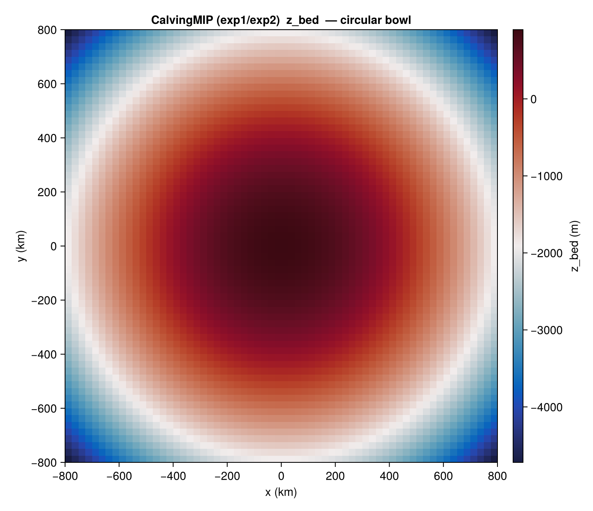
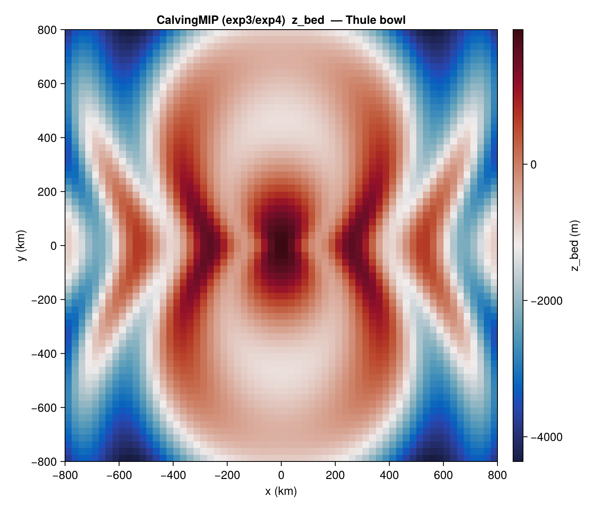

CalvingMIP
CalvingMIPBenchmark covers the four CalvingMIP intercomparison experiments (Cornford et al., CalvingMIP). An idealised ice sheet grows from zero on either a circular parabolic bowl or the "Thule" bowl (parabolic plus azimuthal cosine modulation) under a constant positive surface mass balance. The four experiments differ in bed geometry and in the calving-front condition.
The package provides:
- the bed geometry and IC fields via
state(b, 0), - the closed-form bed helpers
calvmip_bed_circular/calvmip_bed_thule, and - the calving-rate laws as model-agnostic in-place kernels
calvmip_exp1!/calvmip_exp2!on plain arrays.
Constructor
CalvingMIPBenchmark(exp::Symbol = :exp1;
dx_km::Real = 25.0,
smb_const::Real = 0.3,
T_srf_const::Real = 223.15,
Q_geo_const::Real = 42.0)The domain is [−800, +800] km × [−800, +800] km at cell centres (64×64 cells at the default 25 km). Four experiments are supported: :exp1, :exp2, :exp3, :exp4.
Sub-tests
:exp1 — circular bowl, velocity-equilibrium pinned front
Bed from calvmip_bed_circular — a parabolic bowl centred at the origin. The calving rate is set so that the front comes to equilibrium near r = 750 km. Use calvmip_exp1! to compute cr_x / cr_y from the depth-averaged velocity, ice thickness, ice fraction, and level-set function:
b = CalvingMIPBenchmark(:exp1; dx_km = 25.0)
s = state(b, 0.0)
# Host integrates forward; at every step:
calvmip_exp1!(cr_x, cr_y, u_bar, v_bar, H_ice, f_ice, lsf, t;
xc = b.xc, yc = b.yc, r_lim = 750e3)
:exp2 — circular bowl, oscillating front
Same bed as :exp1. The calving-front velocity is forced to oscillate with amplitude ±300 m/yr and period 1000 yr via calvmip_exp2!:
b = CalvingMIPBenchmark(:exp2; dx_km = 25.0)
calvmip_exp2!(cr_x, cr_y, u_bar, v_bar, H_ice, f_ice, lsf, t;
xc = b.xc, yc = b.yc)The bed figure is identical to the :exp1 figure above.
:exp3 — Thule bowl, velocity-equilibrium pinned front
Bed from calvmip_bed_thule — the parabolic bowl modulated by an azimuthal cosine that produces five embayments around the rim. The calving law is calvmip_exp1!.

:exp4 — Thule bowl, oscillating front
Same bed as :exp3. The calving law is calvmip_exp2! (oscillating front).
Helpers
IceSheetBenchmarks.CalvingMIPBenchmark — Type
CalvingMIPBenchmark(exp::Symbol = :exp1; dx_km=25.0, ...)CalvingMIP benchmark on the circular (exp1/2) or Thule (exp3/4/5) domain.
Currently supported:
:exp1— equilibrium calving pinning the front at r = 750 km (circular).:exp2— oscillating calving front, chained from an Exp1 state (circular).:exp3— equilibrium calving pinning the front at r = 750 km (Thule).:exp4— oscillating calving front, chained from an Exp3 state (Thule).
The calving law itself is supplied by the host model via a hook (e.g. YelmoHooks.calv_flt); this struct only carries the model-agnostic geometry and forcing.
IceSheetBenchmarks.calvmip_bed_circular — Function
calvmip_bed_circular(x, y) -> Float64CalvingMIP circular-domain bed elevation (m) at point (x, y) in metres. Parabolic bowl: z_bed = Bc − (Bc − Bl) · r² / R0².
Parameters match the CalvingMIP spec (calving_benchmarks.f90:63-87): R0 = 800 km, Bc = 900 m, Bl = −2000 m.
IceSheetBenchmarks.calvmip_bed_thule — Function
calvmip_bed_thule(x, y) -> Float64CalvingMIP Thule-domain bed elevation (m) at point (x, y) in metres. Parabolic bowl with cosine undulations: a(r) = Bc − (Bc − Bl) · r² / R0² l(θ) = R0 − cos(2θ) · R0/2 z_bed = Ba · cos(3π r / l(θ)) + a(r)
Parameters: R0 = 800 km, Bc = 900 m, Bl = −2000 m, Ba = 1100 m.
References
- Cornford, S. L. et al. (CalvingMIP). Intercomparison of calving-front parameterisations.